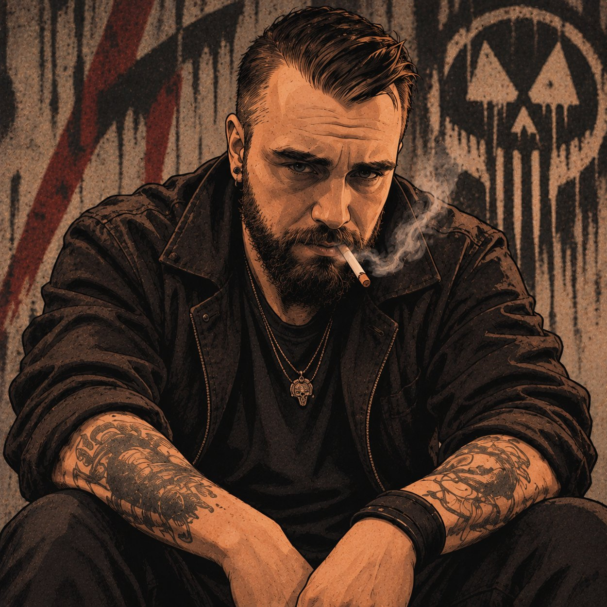
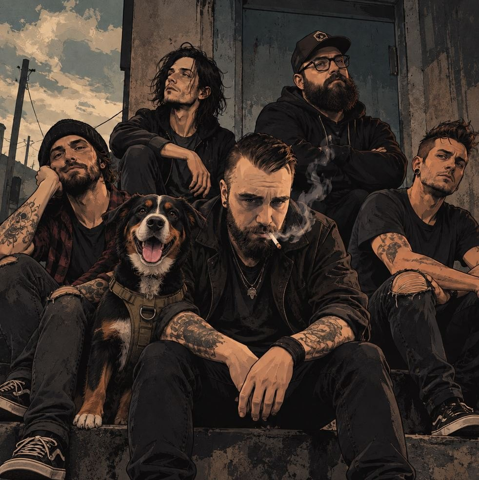
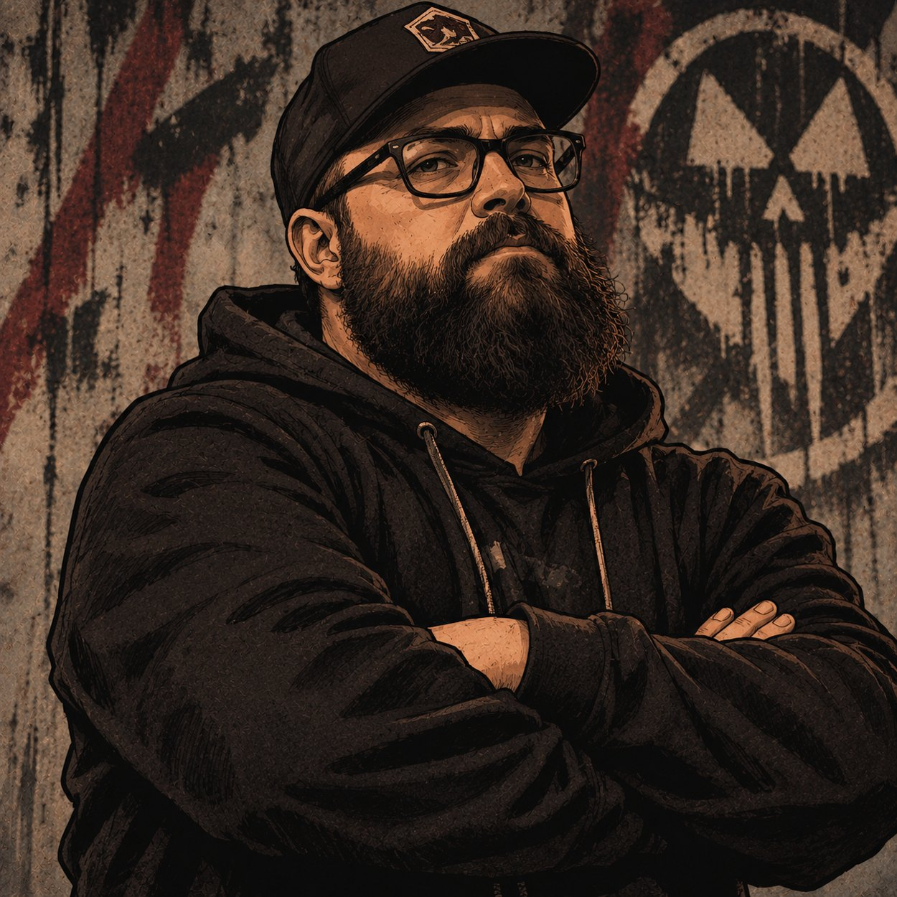
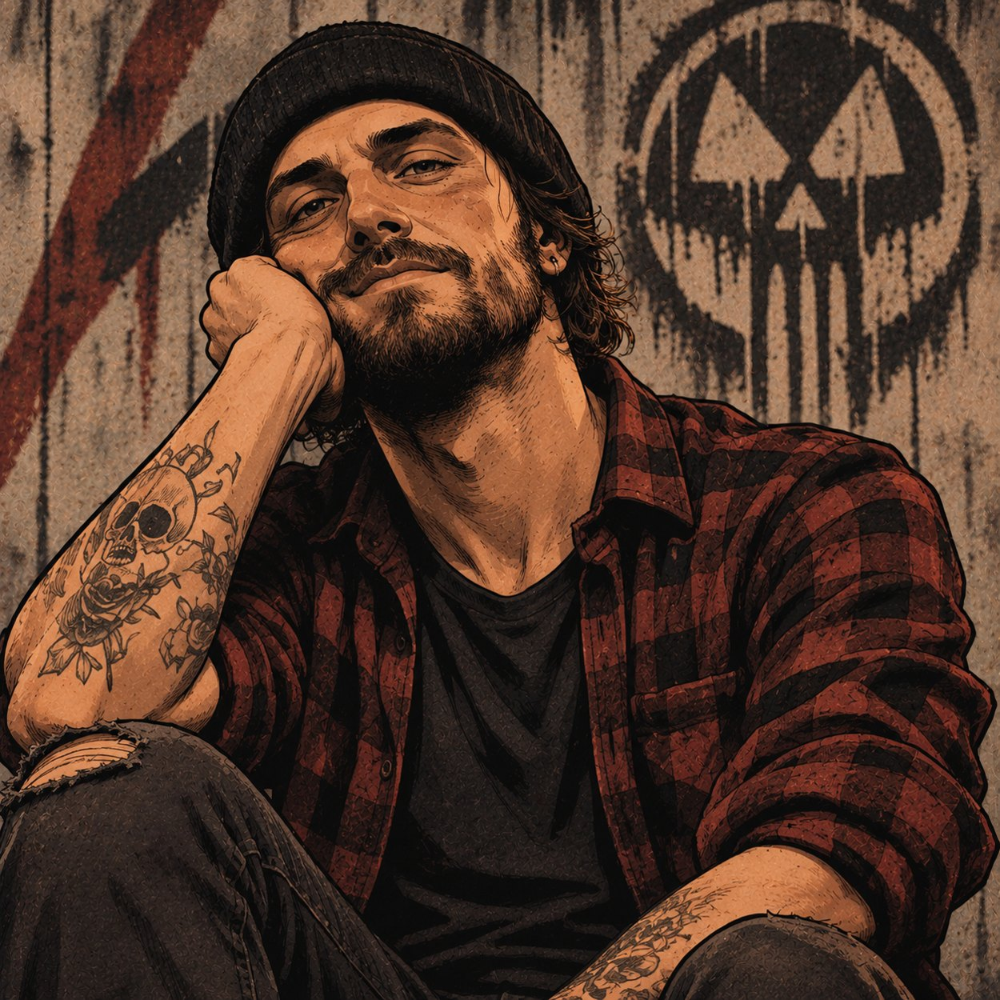
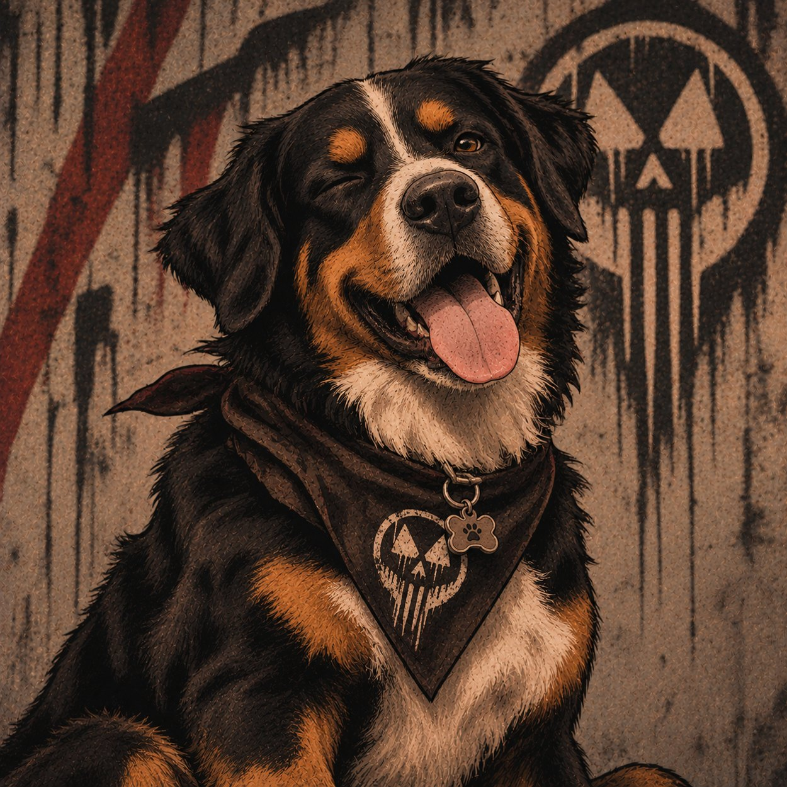

The Kalk
Lead Vocals (Clean)

Heavy Music. Unexpected Twists. Questionable Decisions.
Liver Dumpling is a German rock and metal band that thrives on musical contrasts and unexpected combinations.
With metal at its core, the band blends elements from a wide range of musical styles into its own distinctive sound. Heavy riffs, melodic vocals, aggressive screams and unconventional arrangements come together in songs that rarely take the most obvious direction.
From absurd humor and playful experimentation to darker themes and genuinely emotional moments, Liver Dumpling embraces contrasts without compromising its heavy foundations.
Serious about music. Not necessarily about anything else.
The faces behind Liver Dumpling.

Lead Vocals (Clean)
Lead Guitar · Clean Vocals

Bass · Screams & Growls

Rhythm Guitar
Drums

Band Mascot
Explore the album on your favorite streaming platform.
Listen to Confused Symphony ↗